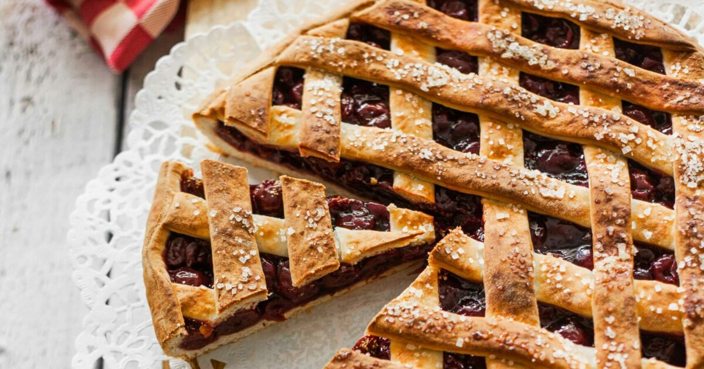

Vlaaien.nl
Hoofdmenu
Kersenvlaai
Deze heerlijke vlaai wordt bereidt met verse kersen uit eigen regio.
Deze vlaai is volledig biologisch.
Pas op: Deze vlaai kan sporen van noten en zuivel bevatten.
€8,99

Voeg toe aan bestelling